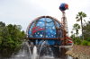

I have many interests that change often. I have lived in many states and have created a table that depicts my favorite activities per a few of the states I've lived.
| Activity | State | Picture |
|---|---|---|
| Running | Alabama |  |
| Hiking | Utah |  |
| Mexican Food | Texas |  |
| Tourist Attractions | Florida |  |
My interests definitely change with my location, but
that doesn't mean I don't dream about delicious
Mexican food once a week since living in Utah.
The other day I went to Chili's... Chili's
for chips and salsa. And it was amazing. But in Texas
Chili's chips and salsa would be a last resort.
Actually, that's probably not true. Chili's does have
pretty good chips and salsa. Or I've been away from
Texas for too long. I don't miss the humidity, lack of
seasons, or unbearable heat of Texas, but I miss the food.
That being said, when I'm in Texas, I miss Utah's food.
And genuinely nothing can top the glorious fried food
of Louisiana. Hush puppies are the best.
Maybe I should have put food as all of my interests.